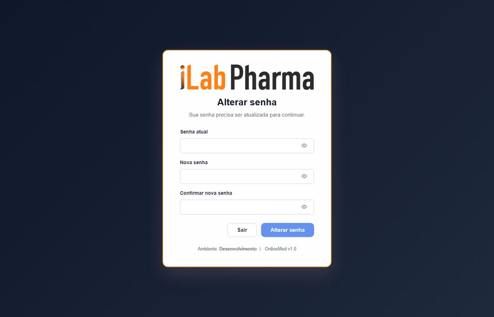
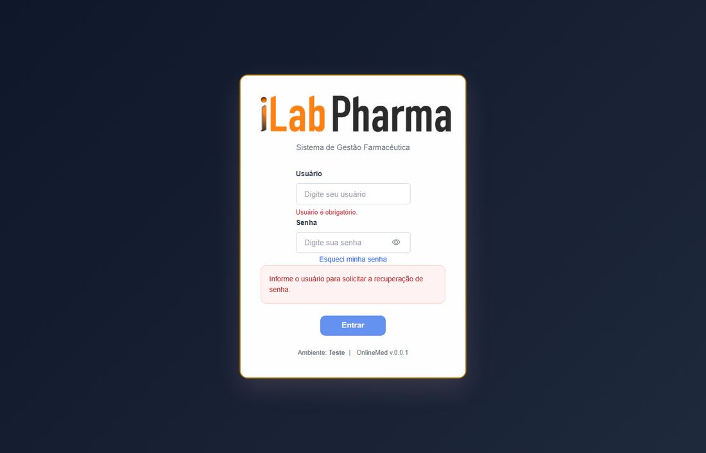
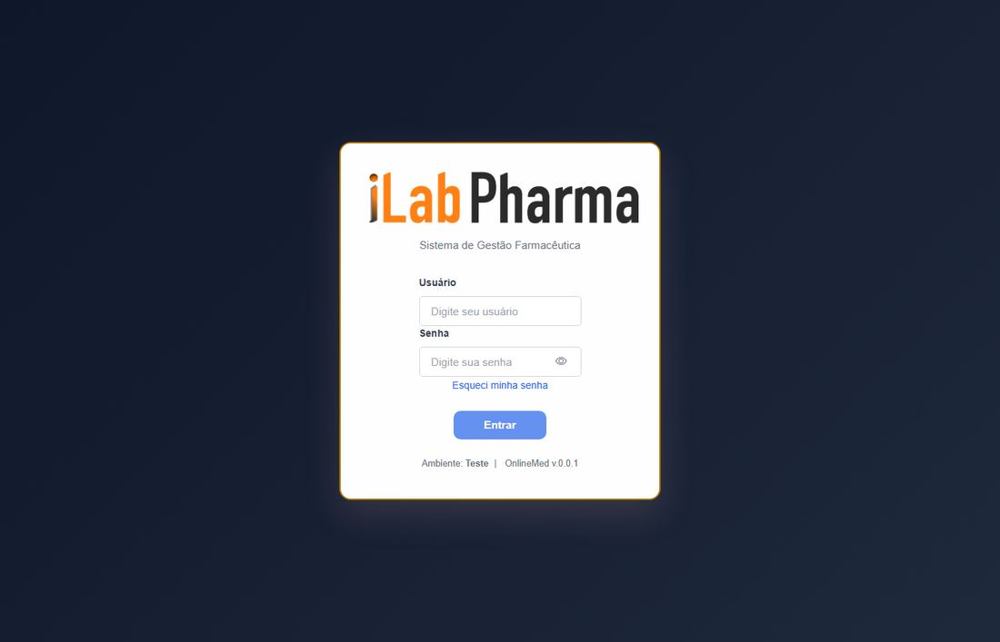
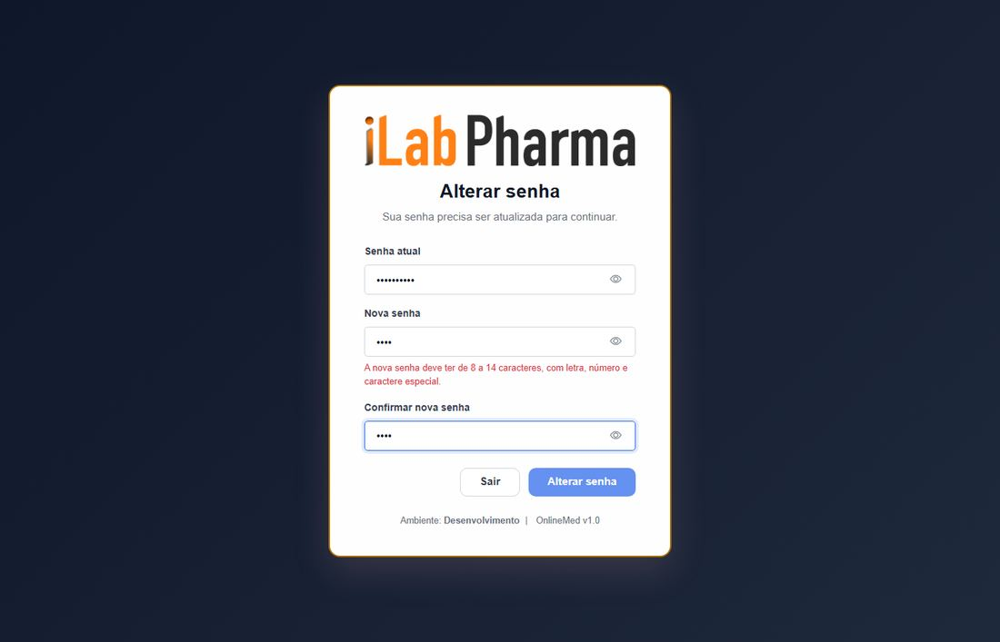
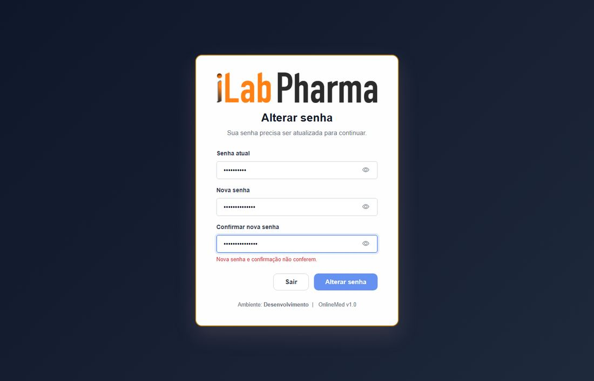
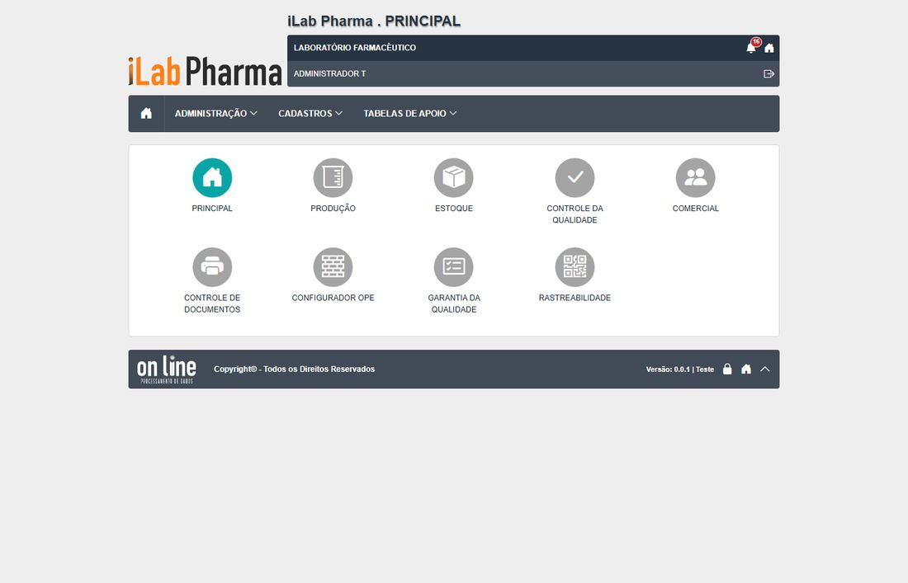
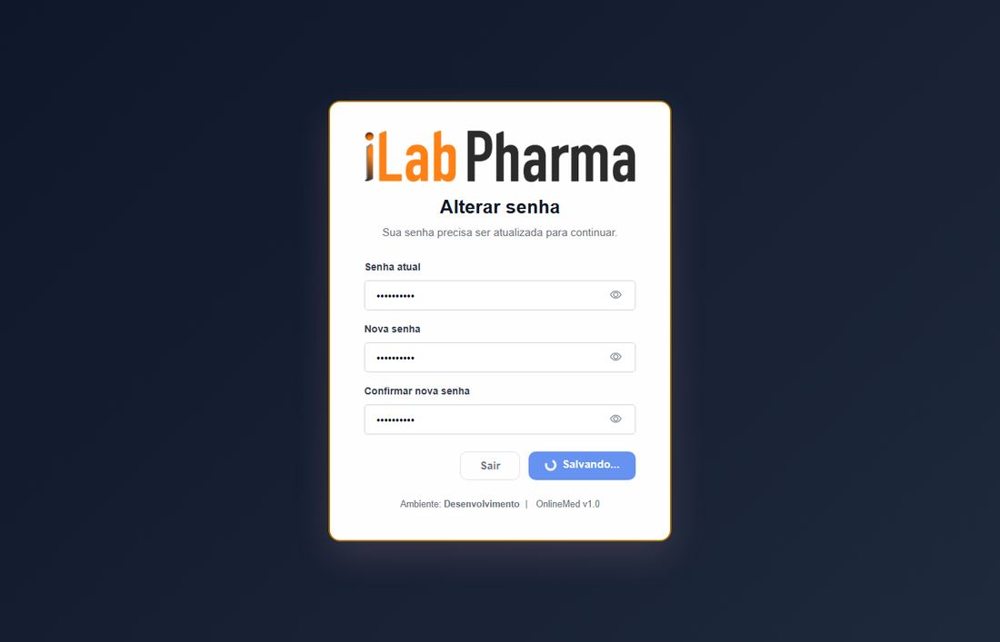

Roteiro para quem vai testar a tela Troca de senha (menu Acesso ao sistema) na versão nova. Use o ambiente de teste da versão nova; o sistema entregue só entra se um resultado parecer estranho.
Antes de começar
t.senhavencidaet.admin2com senha provisória (peça Reset de senha ao administrador se já usou).- Não use o administrador das variáveis de ambiente.
- Todo registro novo começa com
T.(se o ponto falhar, useT-e anote o campo). - Dados de teste ficam no ambiente: não apague o que não criou.
Passos
| # | O que fazer | O que deve aparecer | Caso do plano |
|---|---|---|---|
| 1 | Entrar com t.senhavencida e a senha provisória. |
Vai direto a /trocar-senha. |
RG-PRI-026 |
| 2 | Digitar /administracao/perfis, /administrativas/locais e / no endereço. |
Sempre volta à troca de senha. | RG-PRI-027 |
| 3 | Clicar em Sair. Entrar de novo com o mesmo usuário. | Volta ao login; a troca continua obrigatória. | RG-PRI-029 |
| 4 | Informar senha atual errada. | Mensagem na tela e continua logado. Se for expulso ao login sem mensagem, anote DV-PRI-N-018. | RG-PRI-021 |
| 5 | Testar senhas de 4 e 7 caracteres, sem número, sem especial, só número, e uma de 15 caracteres. | Botão desabilitado e aviso "de 8 a 14 caracteres, com letra, número e caractere especial". | RG-PRI-022, 023 |
| 6 | Informar a nova senha e uma confirmação diferente. | Botão desabilitado com "Nova senha e confirmação não conferem." | RG-PRI-028 |
| 7 | Trocar para uma senha válida de 14 caracteres. | "Senha alterada com sucesso. Entre novamente para continuar." Entra com a nova. | RG-PRI-020 |
| 8 | Tentar trocar para uma das 3 últimas senhas e para a atual mudando só a caixa. | Recusa com mensagem. Anote se a tela fica em "Salvando...". | RG-PRI-024, 025 |
Capturas de tela da versão nova
Imagens da rodada de testes de 17/10/2026, na ordem dos passos. Clique para ampliar.
Passo 1

Passo 2

Passo 3


Passo 4

Passo 5


Passo 6

Passo 7


Passo 8

Como registrar
Para cada passo anote: o que apareceu na tela (copie a mensagem), a classe (Igual, Regressão, Melhoria, Novo ou Bloqueado), o defeito (se houver) e o nome da captura. Se um caso ficou Bloqueado, diga o motivo (usuário, perfil ou dado que faltou).
Se algo parecer uma falha de permissão, confira primeiro a Conta usuário e o Perfil do usuário antes de concluir que a tela falhou.
Tabela de resultados
A coluna Resultado do caso em 17/10/2026 traz o que a tela mostrou, para o caso do plano que o passo cobre (passos do mesmo caso repetem o resultado). Refaça o passo e use a última coluna para o seu resultado: se for diferente, anote a classe (Igual, Regressão, Melhoria, Novo ou Bloqueado) e o defeito.
| Passo | Resultado do caso em 17/10/2026 | Classe | Defeito | Captura | Seu resultado |
|---|---|---|---|---|---|
| 1 | Entra e vai direto à tela de troca | Novo | — | RG-PRI-026-passo-1 |
|
| 2 | Sempre volta à troca. O legado deixava abrir | Melhoria | — | RG-PRI-027-passo-1 |
|
| 3 | Volta ao login e a troca continua obrigatória | Novo | — | RG-PRI-029-passo-1-esqueci-senha, RG-PRI-029-passo-1-sair |
|
| 4 | A API recusa, mas a tela expulsa o usuário para o login sem mensagem | Regressão | DV-PRI-N-018 | RG-PRI-021-passo-1 |
|
| 5 | 8 a 14 caracteres com letra, número e especial; recusa 4 e 7 caracteres, sem número, sem especial / 15 caracteres já são recusados (limite de 14). Ponto a validar: o texto da tela já dizia 8 a 14 | Igual / Regressão | DV-PRI-N-021 | RG-PRI-022-passo-1-curta-botao-desabilitado, RG-PRI-022-passo-1-curta |
|
| 6 | Botão desabilitado, com "Nova senha e confirmação não conferem." O legado aceitava | Melhoria | — | RG-PRI-028-passo-1 |
|
| 7 | "Senha alterada com sucesso. Entre novamente para continuar." Entra com a nova; a provisória e a antiga deixam de valer | Igual | — | RG-PRI-020-passo-0-tela, RG-PRI-020-passo-1-tela-cadeado |
|
| 8 | Recusado: a comparação ainda ignora maiúsculas / A API recusa, mas a tela fica em "Salvando..." para sempre, sem mensagem | Igual / Regressão | DV-PRI-021, DV-PRI-N-018 | RG-PRI-024-passo-1, RG-PRI-025-passo-1 |